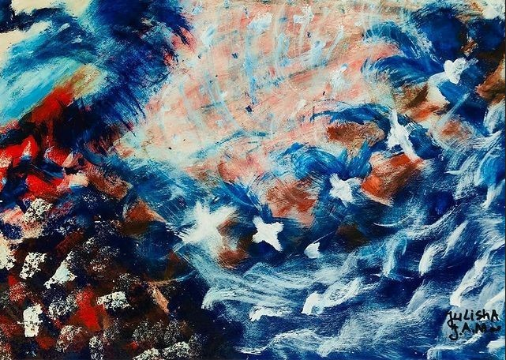

Recent Work Experience 📈
Salon Assistant & Social Media Coordinator – Beauty by Pascalle
Koraalrif st #06, Bridge Village
Projects 🖼️
Lofi themed portfolio website 🌟
A cozy, lofi-inspired personal website that showcases my work and skills. ✨
Built with: HTML, CSS, JavaScript
◇ View Project:
View project

Art Work


